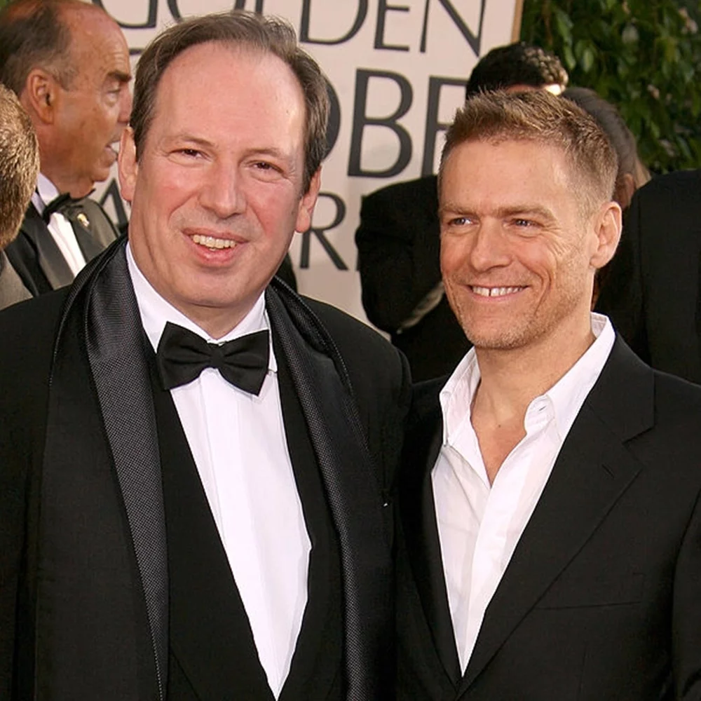

The songs and scores of Spirit: Stallion of the Cimarron were composed by renowned composer Hans Zimmer. He is famously known for composing the soundtracks of movies such as Interstellar, Dunkirk, No Time to Die, and Dune.
His works are notable for integrating electronic music sounds with traditional orchestral arrangements. Since the 1980s, Zimmer has composed music for over 150 films. He has won two Academy Awards for Best Original Score for The Lion King (1994), and for Dune (2021).
The songs are performed by Canadian singer-songwriter, musician, record producer, and photographer Bryan Adams. The album was translated to French, German, Spanish, Italian, Portuguese, and Polish.